the art and science of learning from data
data aotearoa 2024
liza bolton
2024-03-08
scan for slides
or go to link.lizabolton.com
kia ora
Tēnā koutou katoa
Ko Uropi me Kanata te whakapaparanga mai (engari)
Ko Te Awamutu te whenua tupu
Ko O-tāwhao te mārae
Ko Tāmaki Makaurau te kāinga
Ko Liza taku ingoa
Tēnā tātou katoa
Liza, pronounced like: “lie” and “zuh”.
CV at a glance
education
🎓 PhD in Statistics from the University of Auckland: Longitudinal predictors of mortality inequalities in Aotearoa New Zealand
consulting
💼 Statistical consultant for a range of business, education and not for-profit organisations, (or as I prefer, Data Ambassador), self-employed (2013-)
teaching statistics and data science
👩🏻🏫 Professional Teaching Fellow in the Department of Statistics at the University of Auckland (2023-)
👩🏻🏫 Assistant Professor, Teaching Stream in the Department of Statistical Sciences at the University of Toronto (2020-2023)
quick, write! what’s your experience with “statistics”?
Go to this link1 and write a short answer. It is anonymous.
plan for this session
- warm-up activity
- core ideas (samples, population, variance, sampling variation, confidence intervals, statistical tests)
- bogs
- case studies
warm up activity
what will we measure?
Height? Income?
If you’re looking at these slides later, we probably (tech willing) decided on a numeric variable to measure about the group here.
visualising re-sampling
core ideas
variability
Variance or variability are ideas around the spread of our data. We often look at the standard deviation, which is (roughly) the average distance of all the data points from the mean of the data.
If we each put down how many trillions of dollars we have to the nearest trillion? I’m assuming 0, 0, 0, 0, …
The distance we’ve each travelled this week might have quite a lot of variance.
plot some simulated data
Show the code
# To simulate the same way each time
set.seed(8)
# Simulate some data
data <- tibble(scenario = rep(c("No var", "Low var", "High var"), each = 100), value = c(rep(0, 100), rnorm(100), rnorm(100, sd = 5)))
# Liza's colours
colors <- c("#3C143F", "#87528A", "#808080")
# Plot!
ggplot(data, aes(x = value, group = scenario,
fill = scenario, color = scenario)) +
geom_dotplot(bins = 20) +
scale_fill_manual(values = colors) + # Set manual color codes
scale_color_manual(values = colors) +
theme_minimal() +
facet_wrap(~scenario)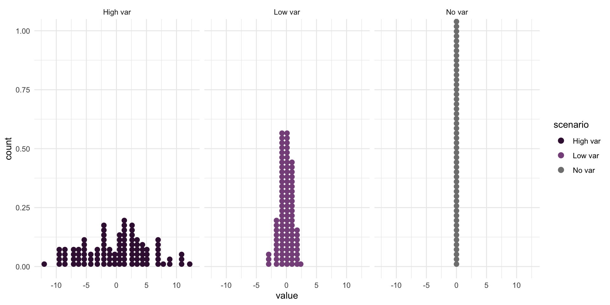
summarise the data
sampling variation
Sampling variation describes how much an estimate varies from sample to sample. (The estimate is our best guess at some true value from the population, also called a parameter.)
For example, if each of you went out and sampled 20 people and calculated their median income and then came back and we all plotted our medians, how would they vary?
This is much more a teaching thought experiment than something you should actually go and do.
But we can use what we know about the size of the sample we can take AND the variability of that sample, to make an educated guess about the variability of the population, and so make claims about sampling variability.
We quantify this uncertainty with our standard error.


an error but not a mistake
Sampling error is the difference between the result from your survey and the population.
-
This can also apply to observations of some underlying process.
- You have a machine that produces widgets, how many have a fault?
- Or, you take a census of all the patients in a doctor’s clinic (the population of current patients) and they rate their experience. Now, you want to make a prediction or inference about the average experiences of new patients in the coming year…even if everything is exactly the same (impossible, but hey) there will still be random noise that we can’t account for with a statistical model, so we’ll have uncertainty about what this value should be.
“Our world imperfectly becomes data” - Rohan Alexander
Mantra: Probably wrong, but hopefully close
aside: non-sampling error (actual mistakes)
All sources of error not related to sampling.
Examples include:
coverage error
-
measurement error
interviewer bias
poor questionnaire design
non-response error
The next two ideas are the most “not what you feel like they should be when you first learn about them” concepts I have ever encountered.
confidence intervals
Example: For religious Asian New Zealanders in 2006, the odds of mortality in the next 5 years were 1.25 (95% CI: 1.06, 1.47) times higher that for their non-religious counterparts.
- This is a claim about confidence in the METHOD that produces the interval
- It is not the same as saying I’m 95/% sure the real value is in here.
- More like, if in 100 universes I sampled from the population/underlying process and applied this method, around 95 of those universes I would have captured the true value.
- I just don’t know which type of universe this is…
- … and I’l never know.
This is a finding from my thesis, Longitudinal predictors of mortality inequalities in Aotearoa New Zealand.
statistical tests
Statistical tests go hand-in-hand with confidence intervals. They are really two sides of the same coin.
CI: What is a plausible range of values for the thing we want to make a claim about?
Tests: Can I reject the claim that the value is this number?
what is a p-value anyways?
It is NOT how likely we are to be right. It is NOT how likely
- It is a ‘conditional probability’.
- IF it was true that the value really is this specific number, then how unusual would it be to get a result like this (or more extreme)
We talk about hypothesis testing, and the idea is that we’re setting up a mini court trial against this hypothesis. It is innocent till proven guilty, so we need to gather evidence against it.
common test purposes
- Is this coin fair? Our hypothesised value could be that it flips heads half the tim (0.5).
- Are the means of these two groups different? We would hypothesise 0, as a different of 0 is no difference.
- Do x and y change together? We would hypothesis that the slope is 0, which is the case where they don’t change together.
We usually try to set up the ‘nothing going on’/‘nothing to see here’/‘status quo’/‘boring’ value and then knock it down by saying, well…IF that was true, it would be very unusual to see a value like we actually saw in our data.
p-hacking
source: FiveThirtyEight
“some of us have a more difficult time saying ‘booyah’ to moral relativism”
bogs

The following is about students in intro stats classes, but I think it is also really helpful for checking in on your own thinking and anticipating how others may engage with your communication about data and models.
…students tend to enter and leave most introductory statistics courses thinking of statistics in one of at least two incorrect ways:
1. Students believe that statistics and mathematics are similar in that statistical problems have a single correct answer; an answer that tells us indisputable facts about the world we live in (Bog #1: overconfidence) (Nicholson & Darnton, 2003; Pfannkuch & Brown, 1996),
or,
2. Students believe that statistics can be ‘made to say anything,’ like ‘magic,’ and so cannot be trusted. Thus, statistics is viewed as disconnected and useless for scientific research and society (Bog #2: disbelief) (Martin, 2003; Pfannkuch & Brown, 1996).
Tintle, N., Chance, B., Cobb, G., Roy, S., Swanson, T., & VanderStoep, J. (2015). Combating Anti-Statistical Thinking Using Simulation-Based Methods Throughout the Undergraduate Curriculum. The American Statistician, 69(4), 362–370. http://www.jstor.org/stable/24592138
secondary data
More and more of data science, and data journalism, uses some form of secondary data.
Are any of these classical statistical tools relevant?
We have more and more scope to measure and observe the world, but much of this is through proxies — not quite the thing we want to measure, but something related.
-
I would argue this requires MORE statistical thinking, not less and is the kind of thinking that AI won’t be able to do well by itself.
- Example proxy: How many fires in Auckland yesterday?
seeing what is not there
This might sounds strange coming from a statistician, but sometimes the most important data story is the story about where the data isn’t. What’s MISSING?
🖼️ Check out the incredible mixed-media installation The Library of Missing Datasets (2016) by MIMI ỌNỤỌHA. It is “a physical repository of those things that have been excluded in a society where so much is collected.
“Missing data sets” are the blank spots that exist in spaces that are otherwise data-saturated.”

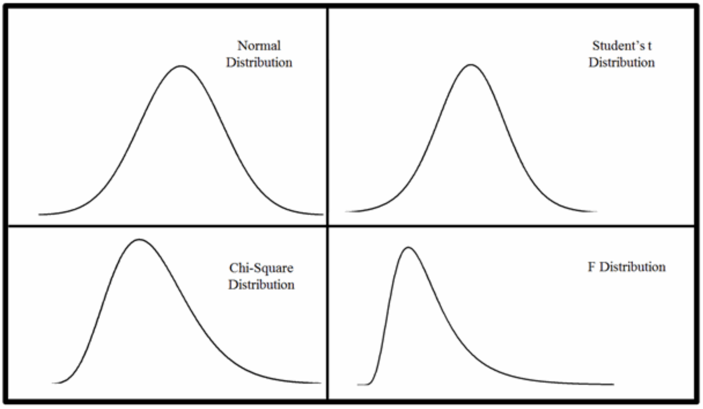
case studies
risky business
Warning
Content warning: There is brief discussion of abortion as part of this case study.
If at any time you feel uncomfortable or would like any support, please let one of us know. It is always okay to take a step away if you need it.
In October 1995 the UK Committee on Safety of Medicines announced people taking 3rd generation oral contraceptive (OC) pills had double the risk of blood clots of 2nd generation OCs.
That is a 100% increase
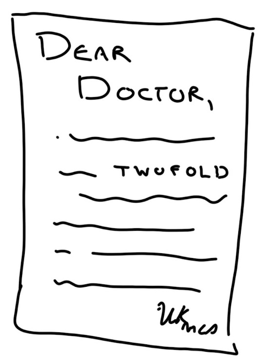
{fig-alt=“Clippings from the Guardian newspaper with title”Blood clot alert on the pill: Women warned about 7 brands of contraceptive”. The text goes on to say: “One and a half million women were told yesterday that their brand of contraceptive pill could double the risk of a blood clot, provoking the biggest scare over the safety of oral contracepetives.”}
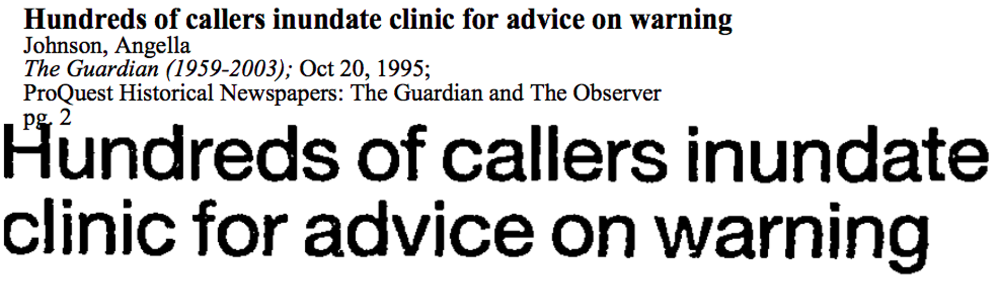{fig-alt=“Clipping from the Guardian newspaper with title”Hundreds of callers inundate clinic for advice on warning”}
quick, write!
what follow-up question(s) do you have about this headline/info?
Go to this link and write a short answer. It is anonymous.
Oral contraceptives were already known to increase risk of blood clots.
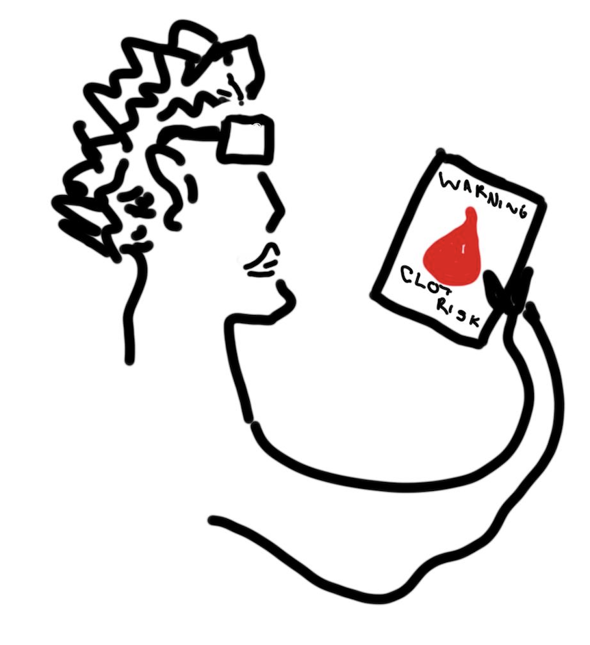
“For the vast majority of women, the pill is a safe and highly effective form of contraception. …
No-one need stop taking the pill before obtaining medical advice.”
~ Advice from UK Committee on Safety of Medicines in the same message
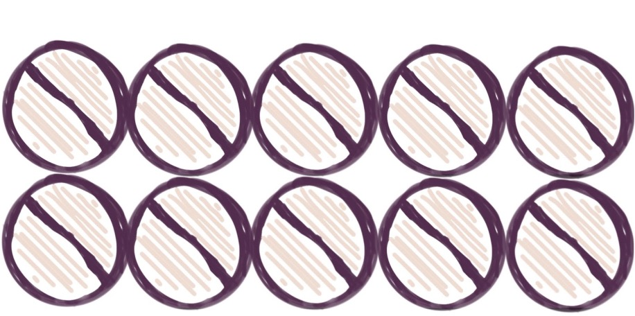
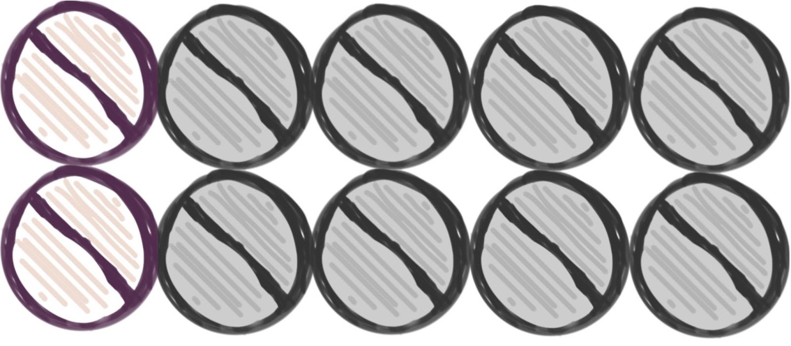
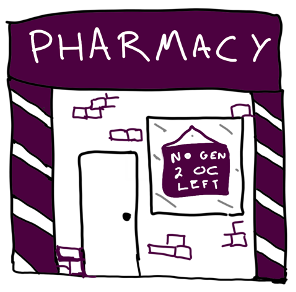
13,500 more abortions
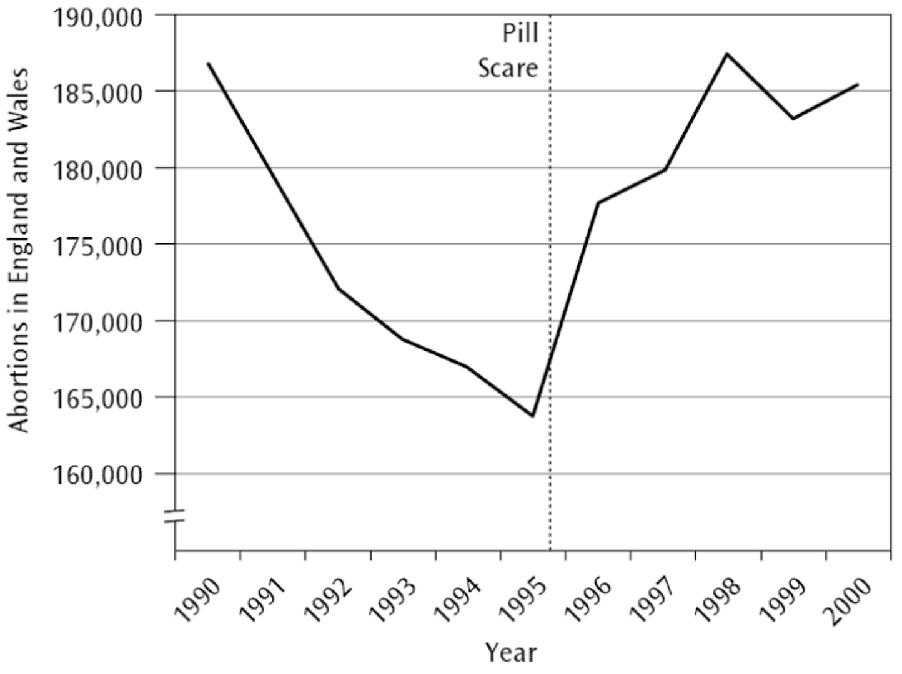
an estimated 800 additional conceptions among girls under 16
£4 - 6 million spent on abortions by the National Health Service (NHS)
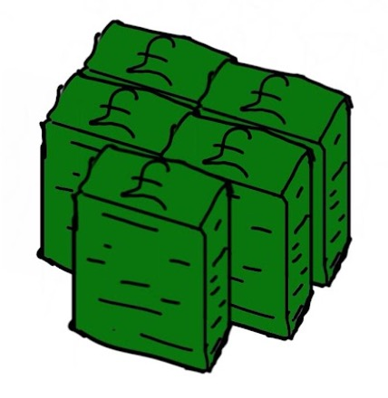
what went wrong?
Absolute risk is a probability.
The absolute risk of getting a blood clot for people taking the 3rd gen OC could be calculated as:
\[ \frac{\text{Number of people taking the 3rd gen OC that get a blood clot}}{\text{Total number of people taking the 3rd gen OC}} \]
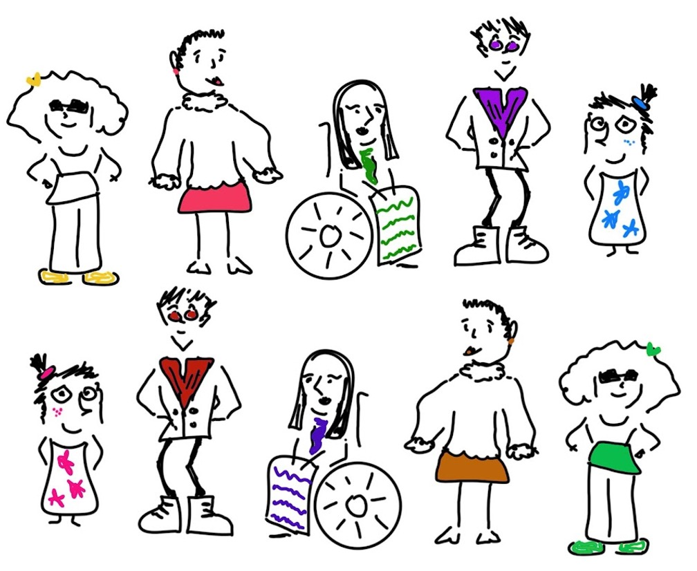
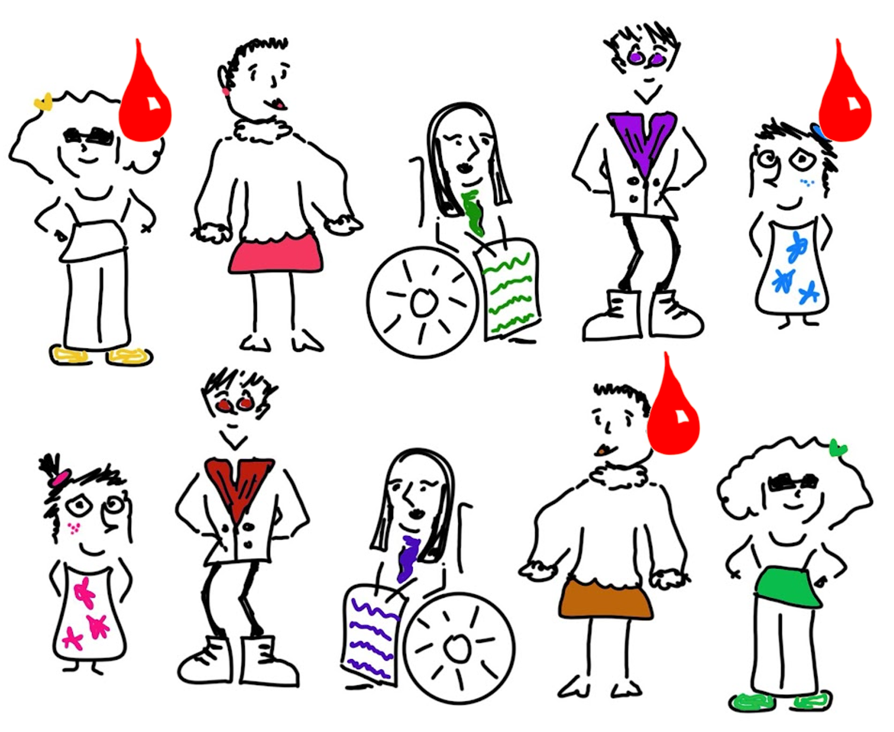
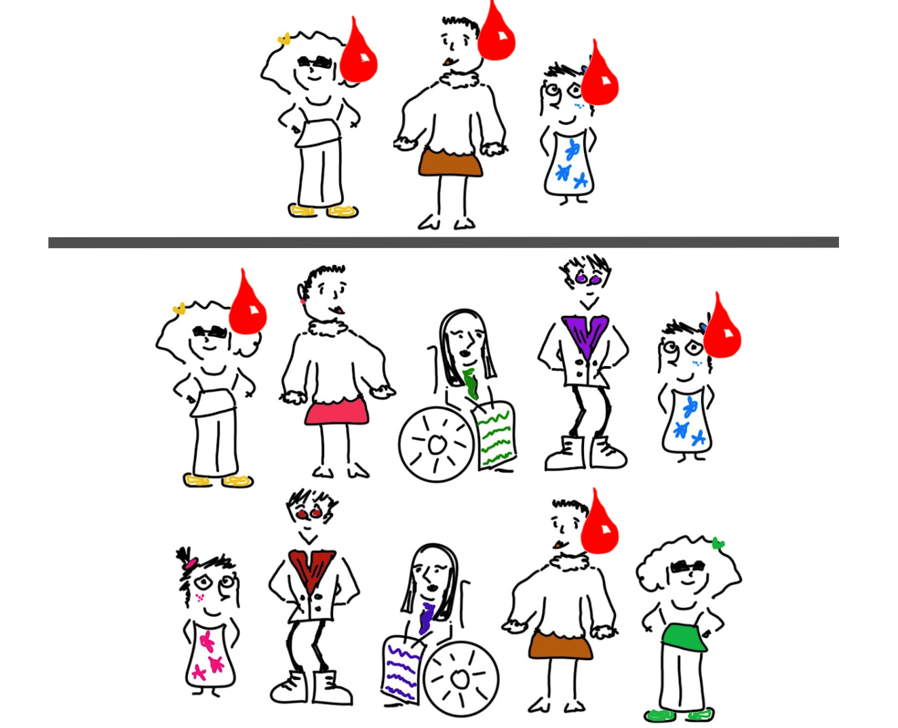
what does DOUBLE the risk mean?
When we talk about double the risk, or 2x the risk or a twofold increase in risk…
We’re talking about relative risk.
We are comparing two absolute risks
| Absolute Risk 1 | Absolute Risk 2 | Relative Risk | |
|---|---|---|---|
| Example A | 30% | 60% | 2 |
| Absolute Risk 1 | Absolute Risk 2 | Relative Risk | |
|---|---|---|---|
| Example A | 30% | 60% | 2 |
| Example B | 3% | 6% | 2 |
| Absolute Risk 1 | Absolute Risk 2 | Relative Risk | |
|---|---|---|---|
| Example A | 30% | 60% | 2 |
| Example B | 3% | 6% | 2 |
| Example C | 0.3% | 0.6% | 2 |
run, run as fast as you can
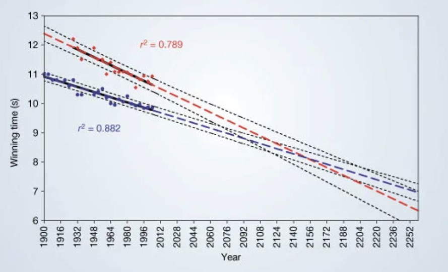
The regression lines are extrapolated (broken blue and red lines for men and women, respectively) and 95% confidence intervals (dotted black lines) based on the available points are superimposed. The projections intersect just before the 2156 Olympics, when the winning women’s 100-metre sprint time of 8.079 s will be faster than the men’s at 8.098 s. From: Momentous sprint at the 2156 Olympics?
quick, write!
what does this chart tell you? any concerns?
Go to this link and write a short answer. It is anonymous.
Case study source and discussion: The gender gap in 100-meter dash times, Calling Bullshit
for whom the (cow)bell tolls

This graph is from an article entitled Music to die for: how genre affects popular musicians’ life expectancy, the Conversations
quick, write!
what does this chart tell you? any concerns?
Go to this link and write a short answer. It is anonymous.
Case study source and discussion: Musicians and mortality, Calling Bullshit
thank you! questions?
Let’s keep in touch.
resources & references
further resources
📘 Telling Stories with Data by Rohan Alexander tellingstorieswithdata.com
🏫 University of Auckland course: STATS 150: Communicating Statistics1 (a single course can be done as a Certificate of Proficiency; lecture recorded but tutorial attendance required)
image reference
Title photo by Pawel Czerwinski on Unsplash